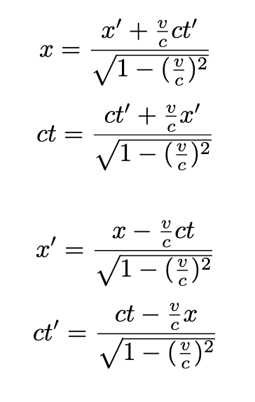

From the embankment's perspective, the train is moving, so it's natural that the two events shouldn't be in the same place/time. In this example, it looks like event A is observed at x'=0,ct'=0, and event C is observed at x'=0.5, ct'=1. Doing a simple division tells us that according to K', K seems to be moving Δx'/Δct' = (0.5-0) / (1-0) = 0.5, meaning Δx'/Δt' = v = (0.5)c, so K is moving half at the speed of light in the positive direction (relative to K'). You could thus also say that K' is moving at -c/2 relative to K.
One very important consequence of relativity is that in the K' diagram, the second event is not event B, but rather event C. Since event B occurs at ct=1, it's tempting to assume that it would appear at ct'=1, but one must always remember that ct and ct' are completely different scales. That is, time is not percieved as the same according to different perspectives.
Lorentz transformations are a convenient way of converting from one co-ordinate system to anothers:

Consider the following diagrams, with K on the left, and K' on the right (v=-c/2). The location/time of each event was calculated using Lorentz transformations.